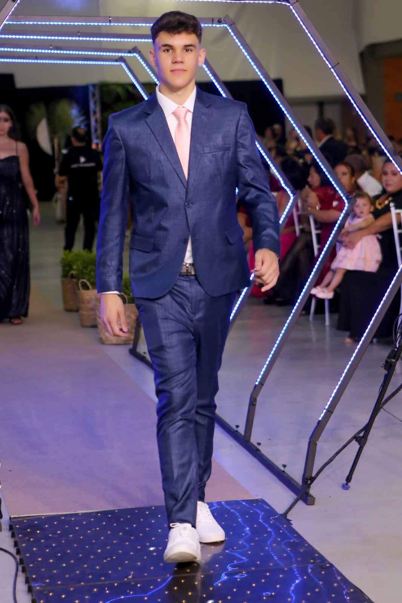

Bem-vindo ao meu espaço digital
Meu nome é Matheus Anthoani Frederico Silva, tenho 19 anos e sou acadêmico de Ciência da Computação no IFSC - Câmpus Lages. Atualmente estou na terceira fase do curso, dedico-me a construir uma trajetória sólida e versátil na área de tecnologia.
Meu foco principal está no desenvolvimento Fullstack, onde busco dominar a integração entre Frontend e Backend utilizando linguagens robustas como Java e Python para criar sistemas eficientes e escaláveis.
Além disso, venho aprofundando meus estudos no ecossistema de Cloud Computing, especialmente na plataforma AWS. Acredito que a computação em nuvem é a chave para projetar aplicações modernas e de alta performance.
Além do Código
Herança Musical: Por influência direta dos meus pais, a música é um pilar central na minha vida. Como multi-instrumentista (violão, guitarra e piano), encontro na música o equilíbrio ideal entre a expressão criativa e a disciplina mental necessária para a engenharia de software.